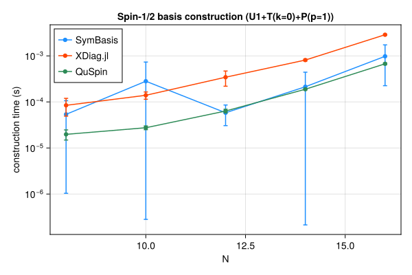
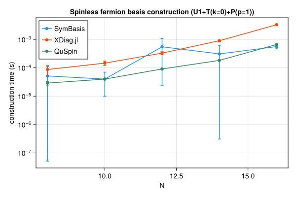
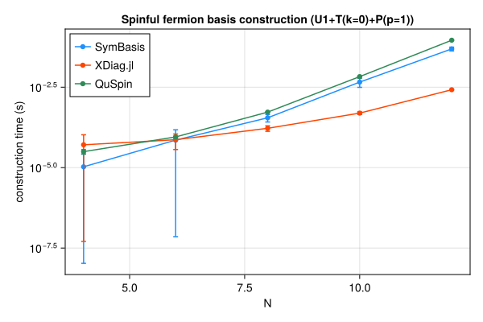
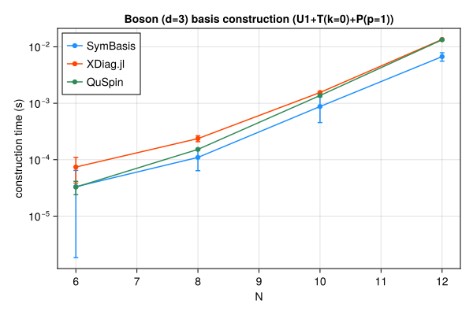

Symmetry-resolved basis construction and representative-state lookup speed, compared against XDiag.jl and QuSpin. SymBasis is benchmarked against its own dev checkout; XDiag.jl and QuSpin are whatever their latest released versions were at the time this page was generated. Regenerated automatically on every SymBasis release.
Threads are left at each library's own defaults (JULIA_NUM_THREADS=auto, OMP_NUM_THREADS unset) rather than pinned to 1 – these numbers reflect out-of-the-box performance, not a strictly single-threaded comparison.
Sweep: BENCH_SWEEP=quick
plot_construction("spin", "Spin-1/2")

| N | config | dim | SymBasis | XDiag | QuSpin | XDiag/SymBasis | QuSpin/SymBasis |
|---|
| 8 | U1 | 70 | 7.65e-06 ± 1.5e-05 s | 4.832e-06 ± 8.8e-06 s | 1.649e-05 ± 9e-06 s | 0.63x | 2.16x |
| 8 | U1+T(k=0) | 10 | 9.535e-06 ± 1.5e-05 s | 3.795e-05 ± 3.1e-05 s | 1.975e-05 ± 6.4e-06 s | 3.98x | 2.07x |
| 8 | U1+T(k=0)+P(p=1) | 8 | 5.375e-05 ± 5.3e-05 s | 8.436e-05 ± 3.5e-05 s | 1.978e-05 ± 4.9e-06 s | 1.57x | 0.37x |
| 10 | U1 | 252 | 9.29e-06 ± 1.4e-05 s | 3.866e-06 ± 5.3e-06 s | 1.382e-05 ± 2e-06 s | 0.42x | 1.49x |
| 10 | U1+T(k=0) | 26 | 0.0001528 ± 0.00035 s | 6.846e-05 ± 4.2e-05 s | 2.422e-05 ± 4.1e-06 s | 0.45x | 0.16x |
| 10 | U1+T(k=0)+P(p=1) | 16 | 0.0002816 ± 0.00045 s | 0.0001394 ± 2.5e-05 s | 2.753e-05 ± 2.6e-06 s | 0.49x | 0.10x |
| 12 | U1 | 924 | 1.547e-05 ± 9.9e-06 s | 4.91e-06 ± 7.7e-06 s | 1.767e-05 ± 1.9e-06 s | 0.32x | 1.14x |
| 12 | U1+T(k=0) | 80 | 4.778e-05 ± 2.8e-05 s | 0.0001682 ± 2.1e-05 s | 4.783e-05 ± 5.5e-06 s | 3.52x | 1.00x |
| 12 | U1+T(k=0)+P(p=1) | 50 | 5.818e-05 ± 2.8e-05 s | 0.000344 ± 0.00012 s | 6.347e-05 ± 5.9e-06 s | 5.91x | 1.09x |
| 14 | U1 | 3432 | 6.822e-05 ± 1.7e-05 s | 4.625e-06 ± 5.5e-06 s | 2.988e-05 ± 2e-06 s | 0.07x | 0.44x |
| 14 | U1+T(k=0) | 246 | 0.0001088 ± 5.4e-05 s | 0.0005902 ± 2.9e-05 s | 0.0001344 ± 5.3e-06 s | 5.42x | 1.24x |
| 14 | U1+T(k=0)+P(p=1) | 133 | 0.0002136 ± 0.00023 s | 0.0008114 ± 3.7e-05 s | 0.0001887 ± 6.5e-06 s | 3.80x | 0.88x |
| 16 | U1 | 12870 | 0.0002359 ± 4.8e-05 s | 7.758e-06 ± 9.8e-06 s | 7.686e-05 ± 4.2e-06 s | 0.03x | 0.33x |
| 16 | U1+T(k=0) | 810 | 0.0004685 ± 0.00045 s | 0.002266 ± 4.8e-05 s | 0.0004696 ± 5.1e-06 s | 4.84x | 1.00x |
| 16 | U1+T(k=0)+P(p=1) | 440 | 0.0009792 ± 0.00075 s | 0.002878 ± 6.6e-05 s | 0.0006732 ± 2.9e-05 s | 2.94x | 0.69x |
| N | config | nsamples | SymBasis | XDiag | QuSpin |
|---|
| 16 | U1+T(k=0)+P(p=1) | 10000 | 1.599e-07 ± 1.4e-09 s | N/A (no decoupled API) | 1.328e-07 ± 1.2e-09 s |
plot_construction("fermion", "Spinless fermion")

| N | config | dim | SymBasis | XDiag | QuSpin | XDiag/SymBasis | QuSpin/SymBasis |
|---|
| 8 | U1 | 70 | 5.852e-06 ± 9.8e-06 s | 4.651e-06 ± 8.5e-06 s | 2.323e-05 ± 1.4e-05 s | 0.79x | 3.97x |
| 8 | U1+T(k=0) | 9 | 8.959e-06 ± 1.3e-05 s | 0.0002223 ± 0.00061 s | 2.476e-05 ± 3.8e-06 s | 24.81x | 2.76x |
| 8 | U1+T(k=0)+P(p=1) | 6 | 5.156e-05 ± 5.9e-05 s | 8.698e-05 ± 3.3e-05 s | 2.898e-05 ± 4.4e-06 s | 1.69x | 0.56x |
| 10 | U1 | 252 | 8.699e-06 ± 1.2e-05 s | 3.445e-06 ± 4.3e-06 s | 2.015e-05 ± 2.2e-06 s | 0.40x | 2.32x |
| 10 | U1+T(k=0) | 26 | 3.035e-05 ± 3.2e-05 s | 6.901e-05 ± 2.4e-05 s | 3.451e-05 ± 3.8e-06 s | 2.27x | 1.14x |
| 10 | U1+T(k=0)+P(p=1) | 16 | 4.011e-05 ± 3e-05 s | 0.0001462 ± 2.6e-05 s | 4.006e-05 ± 2.4e-06 s | 3.65x | 1.00x |
| 12 | U1 | 924 | 1.249e-05 ± 1.2e-05 s | 4.242e-06 ± 6e-06 s | 2.755e-05 ± 6e-06 s | 0.34x | 2.21x |
| 12 | U1+T(k=0) | 76 | 4.817e-05 ± 2.7e-05 s | 0.0001924 ± 2.5e-05 s | 6.73e-05 ± 2e-06 s | 3.99x | 1.40x |
| 12 | U1+T(k=0)+P(p=1) | 33 | 0.0005487 ± 0.00052 s | 0.0003288 ± 3.9e-05 s | 9.096e-05 ± 3.3e-06 s | 0.60x | 0.17x |
| 14 | U1 | 3432 | 0.000109 ± 0.00017 s | 4.211e-06 ± 4.9e-06 s | 4.44e-05 ± 1.9e-06 s | 0.04x | 0.41x |
| 14 | U1+T(k=0) | 246 | 0.0001462 ± 0.00019 s | 0.0006746 ± 3.6e-05 s | 0.0001623 ± 3.4e-05 s | 4.62x | 1.11x |
| 14 | U1+T(k=0)+P(p=1) | 113 | 0.0003084 ± 0.00031 s | 0.0008994 ± 4.8e-05 s | 0.0001824 ± 5.2e-06 s | 2.92x | 0.59x |
| 16 | U1 | 12870 | 0.0005611 ± 0.0008 s | 5.702e-06 ± 7.5e-06 s | 7.788e-05 ± 1.2e-05 s | 0.01x | 0.14x |
| 16 | U1+T(k=0) | 809 | 0.000277 ± 7.3e-05 s | 0.002751 ± 4.4e-05 s | 0.0004725 ± 1.5e-05 s | 9.93x | 1.71x |
| 16 | U1+T(k=0)+P(p=1) | 422 | 0.0005583 ± 9.4e-05 s | 0.003299 ± 3.5e-05 s | 0.0006635 ± 5.8e-06 s | 5.91x | 1.19x |
| N | config | nsamples | SymBasis | XDiag | QuSpin |
|---|
| 16 | U1+T(k=0)+P(p=1) | 10000 | 1.974e-07 ± 1.2e-09 s | N/A (no decoupled API) | 1.199e-06 ± 9.7e-09 s |
plot_construction("spinful_fermion", "Spinful fermion")

| N | config | dim | SymBasis | XDiag | QuSpin | XDiag/SymBasis | QuSpin/SymBasis |
|---|
| 4 | U1 | 36 | 6.349e-06 ± 9.8e-06 s | 6.074e-06 ± 1e-05 s | 2.41e-05 ± 7.9e-06 s | 0.96x | 3.80x |
| 4 | U1+T(k=0) | 10 | 8.948e-06 ± 1.3e-05 s | 2.877e-05 ± 3.5e-05 s | 2.865e-05 ± 6.4e-06 s | 3.22x | 3.20x |
| 4 | U1+T(k=0)+P(p=1) | 6 | 1.062e-05 ± 1.6e-05 s | 5.123e-05 ± 5.4e-05 s | 3.14e-05 ± 4.7e-06 s | 4.82x | 2.96x |
| 6 | U1 | 400 | 1.449e-05 ± 1.4e-05 s | 4.487e-06 ± 7.9e-06 s | 2.771e-05 ± 3.4e-06 s | 0.31x | 1.91x |
| 6 | U1+T(k=0) | 68 | 4.338e-05 ± 3e-05 s | 3.807e-05 ± 3.2e-05 s | 5.874e-05 ± 4.9e-06 s | 0.88x | 1.35x |
| 6 | U1+T(k=0)+P(p=1) | 38 | 7.167e-05 ± 7.8e-05 s | 7.368e-05 ± 3.7e-05 s | 8.999e-05 ± 4.2e-06 s | 1.03x | 1.26x |
| 8 | U1 | 4900 | 0.000138 ± 3e-05 s | 5.325e-06 ± 9.2e-06 s | 9.47e-05 ± 3.7e-06 s | 0.04x | 0.69x |
| 8 | U1+T(k=0) | 618 | 0.0002208 ± 3.9e-05 s | 7.658e-05 ± 3.9e-05 s | 0.0003487 ± 8e-05 s | 0.35x | 1.58x |
| 8 | U1+T(k=0)+P(p=1) | 318 | 0.0003538 ± 9.2e-05 s | 0.0001668 ± 3.2e-05 s | 0.0005306 ± 4.8e-06 s | 0.47x | 1.50x |
| 10 | U1 | 63504 | 0.002227 ± 0.00078 s | 5.535e-06 ± 9.8e-06 s | 0.000574 ± 8.9e-06 s | 0.00x | 0.26x |
| 10 | U1+T(k=0) | 6352 | 0.002617 ± 0.00038 s | 0.0002148 ± 4.1e-05 s | 0.003863 ± 1.4e-05 s | 0.08x | 1.48x |
| 10 | U1+T(k=0)+P(p=1) | 3212 | 0.004544 ± 0.0014 s | 0.0004945 ± 4.7e-05 s | 0.00673 ± 2.2e-05 s | 0.11x | 1.48x |
| 12 | U1 | 853776 | 0.01379 ± 0.0079 s | 8.308e-06 ± 1.6e-05 s | 0.008646 ± 6.2e-05 s | 0.00x | 0.63x |
| 12 | U1+T(k=0) | 71188 | 0.03273 ± 0.0062 s | 0.001052 ± 6.3e-05 s | 0.05421 ± 7.7e-05 s | 0.03x | 1.66x |
| 12 | U1+T(k=0)+P(p=1) | 35694 | 0.04885 ± 0.0066 s | 0.002632 ± 6.7e-05 s | 0.09091 ± 0.00048 s | 0.05x | 1.86x |
| N | config | nsamples | SymBasis | XDiag | QuSpin |
|---|
| 12 | U1+T(k=0)+P(p=1) | 10000 | 9.25e-07 ± 4.4e-09 s | N/A (no decoupled API) | 1.449e-06 ± 9.3e-08 s |
plot_construction("boson", "Boson (d=3)")

| N | config | dim | SymBasis | XDiag | QuSpin | XDiag/SymBasis | QuSpin/SymBasis |
|---|
| 6 | U1 | 141 | 7.905e-06 ± 1e-05 s | 5.101e-06 ± 8.6e-06 s | 1.908e-05 ± 8.4e-06 s | 0.65x | 2.41x |
| 6 | U1+T(k=0) | 26 | 1.453e-05 ± 1.5e-05 s | 0.0002017 ± 0.00053 s | 2.7e-05 ± 4.3e-06 s | 13.88x | 1.86x |
| 6 | U1+T(k=0)+P(p=1) | 18 | 3.322e-05 ± 3.1e-05 s | 7.416e-05 ± 3.6e-05 s | 3.271e-05 ± 8.7e-06 s | 2.23x | 0.98x |
| 8 | U1 | 1107 | 5.318e-05 ± 2.8e-05 s | 5.231e-06 ± 6.3e-06 s | 3.549e-05 ± 2.9e-06 s | 0.10x | 0.67x |
| 8 | U1+T(k=0) | 142 | 0.0001719 ± 0.00026 s | 0.0001595 ± 3e-05 s | 0.0001286 ± 4e-06 s | 0.93x | 0.75x |
| 8 | U1+T(k=0)+P(p=1) | 84 | 0.0001098 ± 4.6e-05 s | 0.0002367 ± 2.8e-05 s | 0.0001524 ± 5.2e-06 s | 2.16x | 1.39x |
| 10 | U1 | 8953 | 0.0005016 ± 0.00045 s | 8.908e-06 ± 7.8e-06 s | 0.0001957 ± 3.6e-06 s | 0.02x | 0.39x |
| 10 | U1+T(k=0) | 902 | 0.000817 ± 0.00088 s | 0.001651 ± 0.0013 s | 0.001145 ± 9.4e-06 s | 2.02x | 1.40x |
| 10 | U1+T(k=0)+P(p=1) | 486 | 0.0008757 ± 0.00042 s | 0.001551 ± 3.6e-05 s | 0.001371 ± 1.2e-05 s | 1.77x | 1.57x |
| 12 | U1 | 73789 | 0.001632 ± 0.00026 s | 2.28e-05 ± 8.1e-06 s | 0.001529 ± 1e-05 s | 0.01x | 0.94x |
| 12 | U1+T(k=0) | 6166 | 0.004329 ± 0.0011 s | 0.01129 ± 7.4e-05 s | 0.01114 ± 2.4e-05 s | 2.61x | 2.57x |
| 12 | U1+T(k=0)+P(p=1) | 3179 | 0.006701 ± 0.0011 s | 0.0135 ± 9.6e-05 s | 0.0133 ± 4.5e-05 s | 2.01x | 1.98x |
| N | config | nsamples | SymBasis | XDiag | QuSpin |
|---|
| 12 | U1+T(k=0)+P(p=1) | 10000 | 1.257e-06 ± 4.6e-09 s | N/A (no decoupled API) | 2.413e-07 ± 1.6e-09 s |